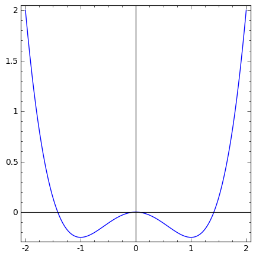
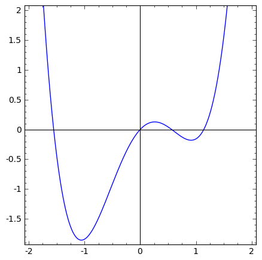

Rozważmy cząstkę, która ma pewną początkową wartość $x_0, v_0$ (pewien punkt przestrzeni fazowej). Cząstka poruszająca się z tarciem $\gamma v$ w pewnym potencjale $U(x)$.
Dla uproszczenia będziemy dalej rozważać, że potencjał posiada dwa minima. Równanie ruchu dla takiej cząstki jest następujące:
$\ddot{x} = -U'(x) - \gamma \dot{x}$ (dla masy $m=1$)
Po pewnym czasie cząstka zatrzyma się w jednym z dwóch minimów. W tym momencie możemy oznaczyć punkt przestrzeni fazowej w zależności od tego czy cząstka wpadła do pierwszego minimum
czy do drugiego (np: różnym kolorem). Powtarzając całą operację dla pozostałych punktów przestrzeni fazowej dostaniemy mapę basenów przyciągania dla danego potencjału.
Tego typu wizualizację możemy prosto wygenerować z wykorzystaniem obliczeń numerycznych. Dla dużej ilości punktów przestrzeni fazowej tego typu symulacja może trwać dosyć długo gdy obliczenia realizowane są z wykorzystaniem CPU. Dużo bardziej efektywne jest przeprowadzanie tego typu obliczeń na karcie graficznej np: z wykorzystaniem API CUDA.
Poniżej znajdują się przykłady dwóch potencjałów wraz z animacjami, które powstały w następujący sposób:
- Dla danego czasu $t$ rozwiązujemy równania ruchu cząstek, które wystartowały z interesującego nas obszaru przestrzeni fazowej.
- Sprawdzamy położenia cząstek i określamy w obszarze jakiego minimum obecnie się znajdują. Przykładowo dla pierwszego potencjału ten warunek to: $x > 0$ minimum $x=1$, $x < 0$ minimum $x=-1$.
- Powtarzamy całą procedurą dla dłuższego czasu symulacji.
Program, który wykorzystany został do wygenerowania poszczególnych klatek animacji: LINK
Wizualizacja basenów przy wykorzystaniu bibliotek jsxgraph: LINK
Potencjał $U(x) = x^4/4 - x^2/2$
|  |
Potencjał $U(x) = x^4 - 2 x^2 + \sin(x)$
|  |